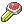
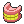
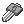

Story
| Item | What it is for | Where from |
|---|---|---|
| Take it to Professor Oak. Afterwards you receive the Pokédex. | Viridian City (gift or event) | |
| The guards at the gates of Saffron City let you through for it. | Celadon City (gift or event) | |
| Unlocks the elevator in the Rocket Hideout. | Rocket Hideout (Kanto) (gift or event) | |
| Opens the doors of Silph Co.. In Johto a second one opens the door in the Radio Tower of Goldenrod City. | Silph Co. (item ball) Goldenrod City (gift or event) | |
 Secret Key | Opens the Gym on Cinnabar Island. | Pokémon Mansion (item ball) |
 Gold Teeth | Take them to the Safari Zone warden in Fuchsia City. He gives you an HM for them. | Safari Zone (Kanto) (item ball) |
| Take it from Mr. Pokémon to Professor Elm. | Route 30 (gift or event) | |
| Opens the door in the underground of Goldenrod City. It also opens the door of New Mauville. | Goldenrod City (gift or event) | |
| Heals the sick Pokémon in the lighthouse of Olivine City. | Cianwood City (gift or event) | |
| Take it to Steven in Granite Cave. | Rustboro City (gift or event) | |
| Take them to the captain in Slateport City. | Rusturf Tunnel (gift or event) | |
| Let you enter the desert on Route 111. | Lavaridge Town (gift or event) | |
| Opens Team Magma's hideout on Jagged Pass. | Mt. Pyre (gift or event) | |
| Opens the door of New Mauville. | Mauville City (gift or event) | |
| The captain at the harbor of Slateport City trades it for an item. | Abandoned Ship (item ball) | |
| Opens the storage room in the Abandoned Ship. | Abandoned Ship (item ball) | |
| Opens a cabin in the Abandoned Ship. | Abandoned Ship (hidden) | |
| Opens a cabin in the Abandoned Ship. | Abandoned Ship (hidden) | |
| Opens a cabin in the Abandoned Ship. | Abandoned Ship (hidden) | |
 Key to Room 6 | Opens a cabin in the Abandoned Ship. | Abandoned Ship (hidden) |
| Lets you enter contests. | Slateport City (gift or event) Verdanturf Town (gift or event) Fallarbor Town (gift or event) Lilycove City (gift or event) |